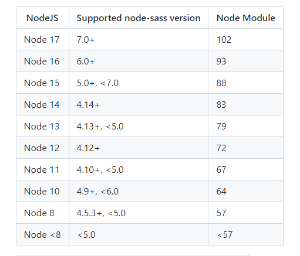
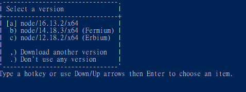
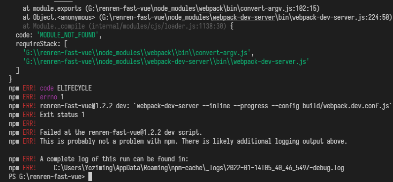
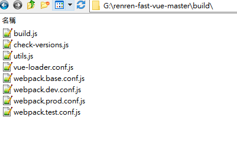

node版本對應、NVS快速切換
npm真的好多坑
node版本一環套一環
- webpack中有sass-loader，用途是載入 Sass/SCSS 檔並將他們編譯為 CSS
- 這玩意版本太高會有相容問題，目前大部分用的是7開頭，用最新的容易出錯
npm install sass-loader@7.3.1 --save-dev
- 然後sass-loader又是基於node-sass，也要求版本，比如七版sass-loader對應4版以上的node-sass
npm install node-sass@4.14.1 --save-dev
-
然後node-sass又又需要對應Node JS版本，關係如下:

Node JS版本
-
目前2022年1月，14或12版是相對妥的，選擇使用LTS版本
- Node.js 16.13.2 Gallium
- Node.js 14.18.3 Fermium
- Node.js 12.22.9 Erbium
-
然而切換Node JS版本很麻煩，所以又有人做了工具
Node Version Switcher
# 安裝(有choco，沒的話自己手動載)
choco install nvs
# 安裝node
nvs add 版本號
# 移除
nvs rm 版本號
- 使用超簡單，輸入
nvs就會跳出互動介面

- 方向鍵選擇 +
Enter就切換好了 - 但是注意每次新開一個CMD要
npm之前要先nvs指定使用的版本，否則會找不到npm的bin報錯無法辨識 'npm' 詞彙是否為 Cmdlet、函數 - 詳細可以參考這篇 https://www.gushiciku.cn/pl/gEiA/zh-tw
小結
Node.js 12.22.9
配
node-sass@4.14.1
如果sass安裝異常可以用淘寶鏡像
npm i node-sass --sass_binary_site=https://npm.taobao.org/mirrors/node-sass/
最後補充一個
- 使用renren-fast-vue的時候，也不知動到哪裡，突然就怎樣都開不起來，報錯
Error: Cannot find module 'G:\renren-fast-vue\build\webpack.dev.conf.js'

- 查了半天才發現這個
build資料夾不知何時消失了，導致開不起來 - 而且他報錯又寫啥webpack，害我查半天

- build資料夾裡面有這些檔案，如果消失了可以去git上抓一份放進去就好了

上次修改於 2022-01-21